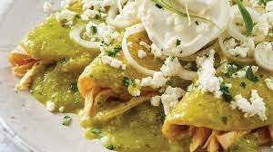

Make Green Enchiladas!

Green Enchiladas
Green enchiladas are very delicious and can sometimes be very spicy.
You can make enchiladas either through the oven or by frying tortillas and dipping them
in the sauce. The traditional Mexican way is to fry them.
Ingredients
- 2 bone-in chicken breast halves
- 2 cups chicken broth
- 1/4 white onion
- 1 clove garlic
- 2 teaspoons salt
- 1 pound fresh tomatillos, husks removed
- 5 serrano peppers
- 1/4 white onion
- 1 clove garlic
- 1 pinch salt
- 12 corn tortillas
- 1/4 cup vegetable oil
- 1 cup crumbled queso fresco
- 1/2 white onion chopped
- 1 bunch fresh cilantro, chopped
Directions/Steps
- In a saucepan, combine chicken breast with chicken broth, one quarter onion, a clove of garlic, and 2 teaspoons salt. Bring to a boil, and then boil for 20 minutes. Reserve broth, set chicken aside to cool, and discard onion and garlic. When cool enough to handle, shred chicken with your hands.
- Place tomatillos and serrano chiles in a pot with water, enough to cover them. Bring to boil, and continue boiling until tomatillos turn a different shade of green (from bright green to a dull, army green). Strain tomatillos and chiles, and place in a blender with another quarter piece of onion, 1 clove garlic, and a pinch of salt. Pour in reserved chicken broth, so that liquid just covers the veggies in the blender by about an inch. Blend all ingredients until they are completely pureed. Pour salsa in a medium saucepan, and bring to a low boil.
- Pour oil in a frying pan, and allow to get very hot. Slightly fry tortillas one by one in hot oil, setting each on a paper towel afterwards to soak some of the oil. Finally, dip slightly fried tortillas in low-boiling green salsa, until tortillas become soft again.
Place on plates, 3 per person.
- Fill or top tortillas with shredded chicken, then extra green sauce. Top with crumbled cheese, chopped onion, and chopped cilantro.